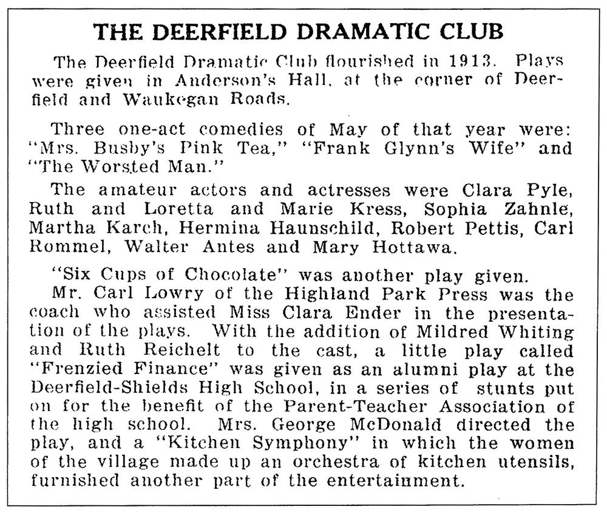

Deerfield Theater was founded in 2000 by the Deerfield Park District, and with the devotion of Susan Redondo, as a successor to the long running and successful Children's Theater of Deerfield, Inc. Deerfield Theater combines all the fun and excitement of a professional theater environment, with a neighborhood atmosphere and a family-oriented setting.
Our mission is to produce the highest quality theater experience for Deerfield and our surrounding communities, whether in the audience, on stage, or as part of the production staff.
Our family theater productions are appropriate for family entertainment and have children as an integral part of the cast. Through our professional staff and seasoned adult performers, we strive to mentor young actors by giving them the unique opportunity to learn and perform in a professional quality theater group.
Deerfield Theater is supported, in part, through the Illinois Arts Council, the National Endowment for the Arts, ticket sales, community sponsors, and ad sales. We are governed by a board of directors who meet throughout the year. It takes a lot of help to put a show together!
Board of Directors
Marci Medwed Barnett
Dan Berman
Shannon Cahill
Chas Carol
Ryan Elliott
Claire Higgins
Emily Kallas
Mathew Kerbis
Larry Mason
Susie Mason
Chris Morgan
Lauren Price
Marc Price
Lee Rivlin
Julie Schneider
Julie Stevens
Sue Vani
Steve Zeal
As noted above, Deerfield Theater continues as a successor to Children's Theater of Deerfield. Deerfield historical records also give us the following Deerfield theater gem, from way back in 1913...

Our Park District and other public agencies are subject to the provisions of the Americans with Disabilities Act (ADA), which prohibits discrimination in the services, programs or facilities provided to individuals with disabilities. If you believe that, in accordance with the Americans with Disabilities Act, special assistance may be required when participating in a program, using a facility or receiving a service, please contact Executive Director Laura McCarty at 847-572-2615.